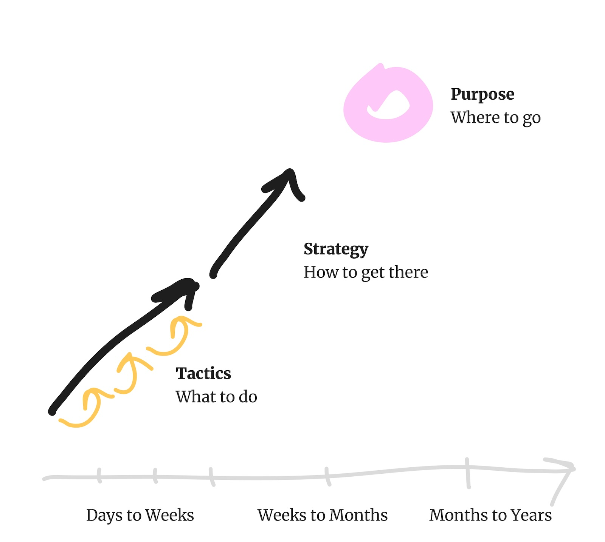

Product Primer
A Starter Guide to Building Great* Products (*great is not always successful)
Introduction
Welcome to Product Primer – A Starter Guide to Building Great Products* (*great is not always successful).
The primer presents a collection of theoretical frameworks and practical methods for product development,
integrating diverse perspectives from technology, creativity, and business strategy. It challenges the conventional notion
that a great product is automatically a successful one. Instead, it focuses on what's in your control - empowering
you build great products that serve a purpose and solve real problems.
The perspectives and advice offered in this primer are highly opinionated,
drawn directly from the author's extensive experience in product building.
Whether you're a seasoned professional or just starting out, this guide is designed to provoke thought,
inspire innovation, and ultimately assist you in crafting products that aim to make a difference.
What is "Product" Work?
Product work is essentially varying lenghts or problem solving iterations with varying level of detail.
It starts from defining the purpose, the reason for a product's existence. This could be something like
The home for video meme creators or The number one online destination for fashion.
Based on the maturity of the product, this typically doesn't change much over time.
When creating a completely new direction and purpose for the product, it is often considered a pivot.
This could be a result of not finding enough growth with the existing product, a significant shift in the market
or a new competitor entering the market and changing the game.
The next level or product work is defining the strategy, how that purpose manifests itself as a product.
This could be for example providing video meme creators a place to host their videos and their community
and to monetise with their content. Or for the latter it could be providing a large catalog of global and local fashion items, with
competitive pricing, delivered home fast and conveniently.
Going further into details, it boils down to the actual
things to build, like creating apps, hosting videos, building subscription and advertising models. Or building and operating
warehouses and logistics centers, integrating to major fashion brands backends and to
local brick-and-mortar stores' order management systems. On the tactical level the shortest iterations are
small chunks of deliverables that provide outcomes that move the product forward.

Work on each of these levels have their own cadence with their own frameworks and tools to help frame thinking
on what to consider and where to focus in each of the levels. The thinking and working processess at these different levels
are not sequential, but happen in parallel. The strategy work constantly feeds into the tactical work, to keep a sharp focus
on the desired outcomes to fulfill the purpose of the product. This Product Primer aims to provide sufficient
understanding and frameworks to approach problem solving on these different levels, with practical
examples, based on the authors own hands-on experience.